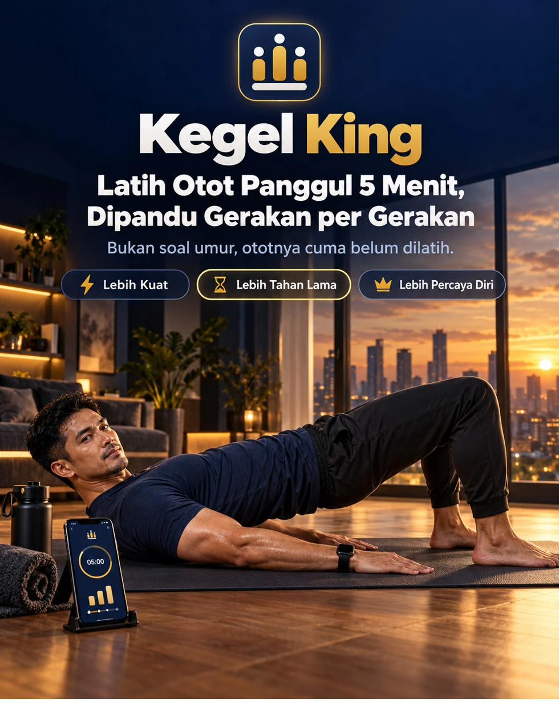
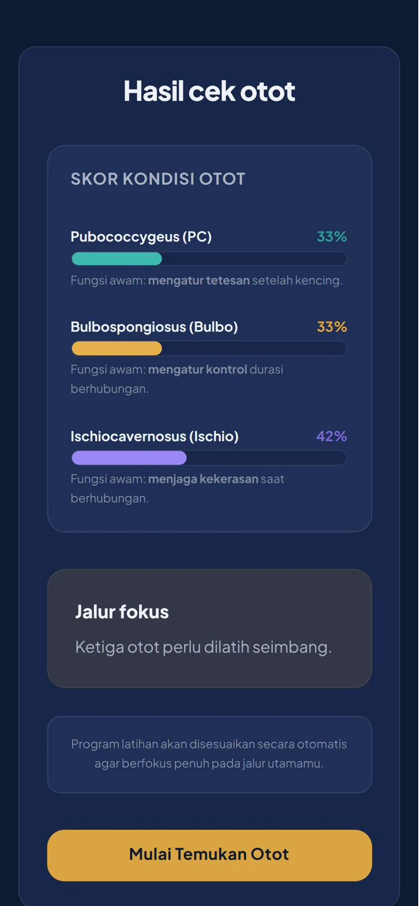
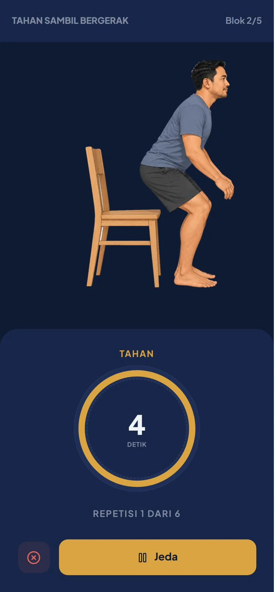
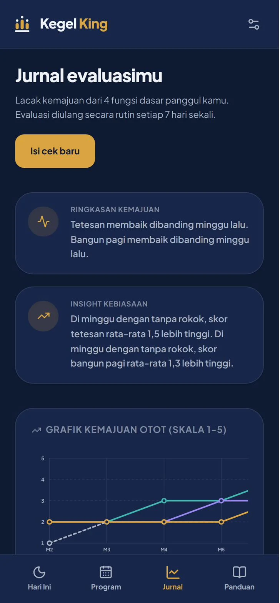
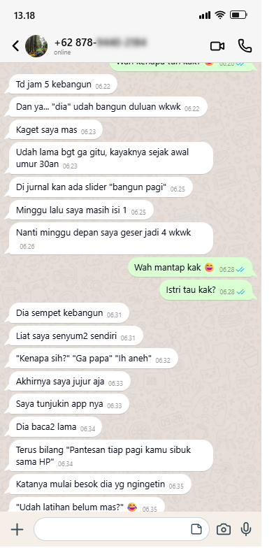
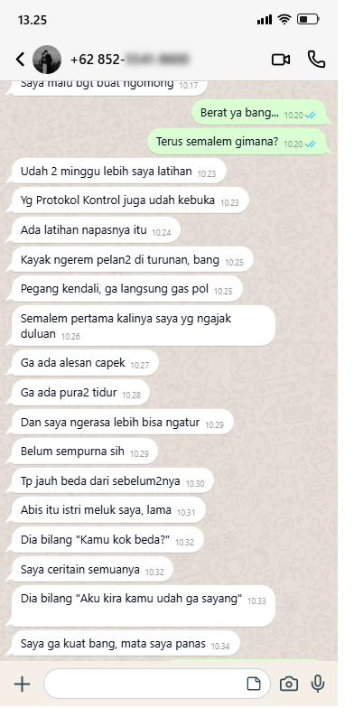
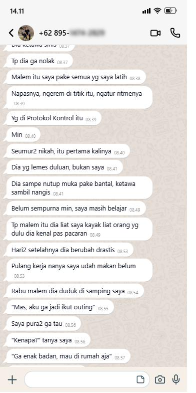

Banyak pria menganggap tetesan setelah buang air kecil, bangun pagi yang gak ikut bangun, dan kerasnya yang berkurang sebagai urusan umur. Padahal ada tiga otot dasar panggul yang berperan di ketiganya, dan otot bisa dilatih. Kegel King adalah app di HP yang mengajakmu mengenali ototnya, melatihnya 5 menit sehari dengan figur yang bergerak, lalu mencatat kemajuanmu tiap minggu selama 12 minggu.
Dibuka dari browser HP atau laptop. Tanpa install, tanpa akun.
“Kok basah lagi.”
Sudah selesai dari kamar mandi, celana sudah naik, dan beberapa menit kemudian terasa lembab. Kamu bilang ke diri sendiri ini wajar, namanya juga umur. Besoknya terulang.
“Pagi, tapi gak ikut bangun.”
Dulu bangun tidur tubuhmu sudah siap sendiri. Sekarang berbulan-bulan tidak. Kamu bilang cuma capek, cuma kurang tidur, lalu gak mau mikir lebih jauh.
“Mas capek ya?”
Istrimu bertanya pelan setelah malam yang selesai lebih cepat dari yang kamu mau. Dia gak protes, tapi kamu bisa lihat. Kamu diam, pura-pura ngantuk, dan mulai kepikiran beli obat kuat.
Tiga adegan ini kelihatan beda, tapi ketiganya bisa berhubungan dengan satu hal yang bisa kamu kerjakan sendiri: otot dasar panggul yang belum pernah dilatih.
Selama ini otot paling penting di tubuhmu justru yang paling jarang disentuh. Di dasar panggul ada tiga otot, dan masing-masing punya tugas. Mereka bisa dilatih seperti otot lain, dengan gerakan yang tepat, bertahap, dan konsisten.
Mengatur tetesan setelah buang air kecil. Dilatih lewat gerakan Peras Tuntas.
Mengatur kontrol. Dilatih lewat gerakan Kedip Cepat.
Menjaga dan mengunci kekerasan. Dilatih lewat gerakan Tahan Lama.
Latihan otot dasar panggul sudah diteliti pada pria dengan keluhan ereksi dan kontrol, dengan evaluasi di minggu ke-6 sampai ke-12. Itu sebabnya programnya 12 minggu. Hasil tiap orang berbeda, dan app ini tidak menjanjikan hasil pasti.
Kenali ototnya dulu, baru dilatih.
Aturan yang dijaga app: program latihan baru terbuka setelah kamu lulus cek Temukan Otot.
Sembilan pertanyaan singkat tentang tetesan, bangun pagi, kekerasan, kontrol, kebiasaan harian, dan riwayat kesehatan. Hasilnya: skor tiap otot dan jalur fokus programmu.

Panduan sederhana untuk mengenali otot yang benar, lengkap dengan cek benar atau salah: perut, paha, dan bokong tidak ikut mengencang, napas tidak ditahan. Lulus cek, program terbuka.
Tekan Mulai sesi, ikuti figur yang bergerak, tutup dengan relaksasi, lalu nilai sesimu: mudah, pas, berat, atau pegal.
Sesi Terpandu
Figur di layar bergerak mengikuti hitungan: kencangkan, tahan, lepas. Kamu tinggal ikuti. Pilih panduan suara, getar, atau senyap kalau lagi gak mau berbunyi.
Tiap sesi dibuka dengan napas panggul dan ditutup relaksasi penuh.

Program 12 Minggu
Tiga fase: Aktivasi, Kekuatan, lalu Fungsional, dari rebahan, duduk, sampai berdiri dan berjalan. Dari penilaianmu, level tiap gerakan naik kalau terasa mudah dan turun kalau berat atau pegal.
Maksimal 2 sesi sehari, karena otot butuh istirahat.
Jurnal Mingguan
Cek mingguan 30 detik dengan empat indikator: tetesan, bangun pagi, kekerasan, dan kontrol, skala 1 sampai 5.
Hasilnya jadi grafik dari minggu ke minggu, jadi kamu tahu apa yang membaik dan apa yang perlu dijaga, bukan menebak.

Gak ada akun dan password di dalam app. Catatan latihan dan jurnalmu tersimpan di HP kamu saja. Mau lebih tertutup, pasang PIN 4 angka. Ganti HP? Simpan file cadangan dari Pengaturan, lalu pulihkan di HP baru.
Latihan mandiri paling sering berhenti di hari-hari awal. Karena itu ada pengingat harian di jam pilihanmu, streak hari beruntun, dan gelar yang naik dari Prajurit, Panglima, sampai Raja.
menilai kondisi 3 ototmu lewat tes, memandu kamu mengenali ototnya, menyusun sesi 5 menit, menaikkan atau menurunkan level sesuai penilaianmu, dan mencatat kemajuan tiap minggu.
obat, dokter, atau pengganti pemeriksaan. Keluhan ereksi, kontrol, atau tetesan bisa terkait kondisi lain seperti kencing manis, darah tinggi, atau kolesterol. Tes awal menanyakan riwayatmu. Kalau kamu mengalami nyeri saat buang air kecil, darah di urin atau sperma, atau ereksi hilang total mendadak, periksa ke dokter dulu.
| Obat kuat atau jamu | Artikel gratis dan timer HP | App kegel luar negeri | Kegel King | |
|---|---|---|---|---|
| Yang dikerjakan | Menunggu efek dari luar | Baca, lalu jalan sendiri | Timer dan paket latihan | Melatih 3 otot satu per satu |
| Tahu ototnya yang mana | Tidak ada | Disuruh cari sendiri | Tergantung app | Tes awal dan Temukan Otot |
| Naik level | Tidak ada | Tidak ada | Tergantung app | Otomatis dari penilaianmu |
| Memantau kemajuan | Tidak ada | Pakai ingatan | Tergantung app | Jurnal mingguan 4 indikator |
| Bahasa dan harga | Dibeli berulang | Gratis | Umumnya Inggris, dolar | Indonesia, Rp127.000 |
Geser untuk melihat cerita lainnya. Nomor disensor untuk menjaga privasi.



App kegel pria dari luar negeri umumnya berbahasa Inggris dan berlangganan dolar, dari sekitar Rp420 ribu per tahun sampai sekitar Rp148 ribu per minggu untuk paket mingguan. Kegel King berbahasa Indonesia, harganya dalam rupiah.
Panduan Akses berisi kode masuk dikirim ke email yang kamu pakai saat order.
Tenang, kamu cuma salah klik. Balik ke email yang sama, lalu:
Kamu sudah coba cari obat, baca artikel, atau pura-pura gak kenapa-kenapa. Satu hal yang belum pernah kamu coba: melatih ototnya, dengan panduan yang jelas.
Hari pertamamu cuma satu tes.
Dibuka dari browser HP atau laptop. Tanpa install, tanpa akun.